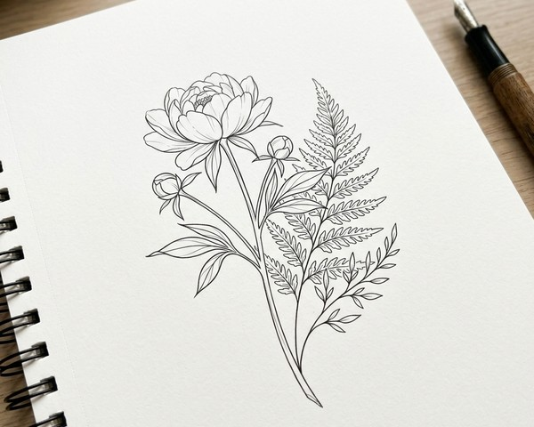
● СвободенДикий пион и ветка папоротника
Плавная многослойная контурная графика. Идеально ложится вдоль линии ключицы или по изгибу рёбер.
Размер: 12 × 6 см
Сеанс: ~2.5 часа
Все эскизы разрабатываются индивидуально под анатомические линии тела (ключицы, рёбра, запястья). Нанесение тончайшими стерильными модулями без утолщения контура с годами.
Автоклавирование инструментов класса B (Euronda, Италия), стерильные одноразовые модули Kwadron с защитной мембраной против обратного оттока пигмента.
Веганский гипоаллергенный углеродный пигмент сверхмелкого помола (США). Не окисляется, не выцветает в синий или зелёный оттенок и сохраняет прозрачность контура.
Каждый эскиз масштабируется и выравнивается по изгибу мышц, ключиц и рёбер на индивидуальной примерке трансфера перед началом нанесения.
Приём гостей проходит строго по индивидуальной предварительной записи в приватных кабинетах.
ул. Рубинштейна, 24 • Исторический доходный дом
Просторный мансардный лофт с естественным северным светом, дубовым паркетом и персональной чайной комнатой для отдыха перед сеансом.
ул. Покровка, 12 • Особняк XIX века
Тихий закрытый двор, высокие сводчатые потолки и медицинский уровень стерильности. Пространство создано для глубокого спокойствия и уединения.

● СвободенПлавная многослойная контурная графика. Идеально ложится вдоль линии ключицы или по изгибу рёбер.
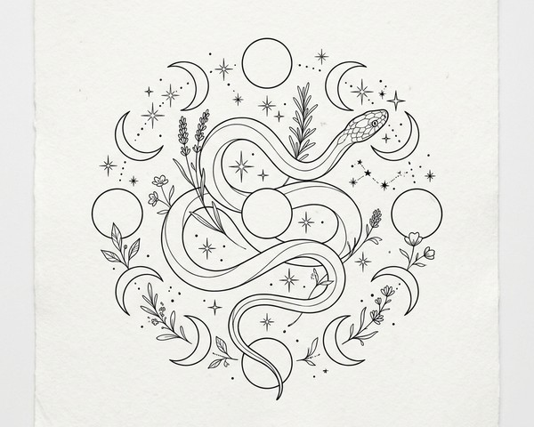
● СвободенДеликатная микро-линия 0.22 мм и аккуратный точечный градиент. Прекрасно смотрится на предплечье или лодыжке.
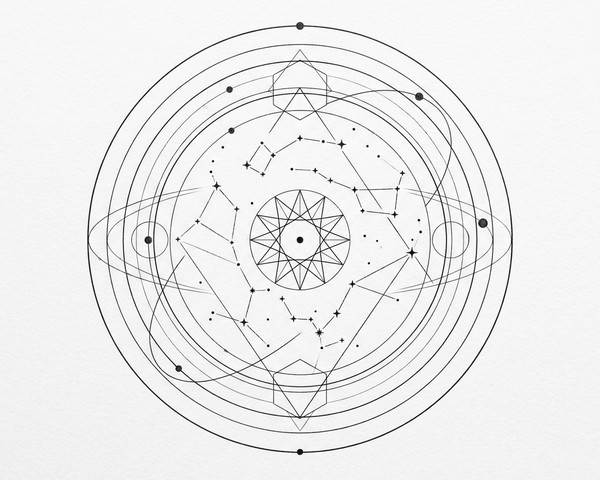
○ En archiveКонцентрические окружности и астрономические оси. Строгая гармония пропорций, подходящая для предплечья или лопатки.
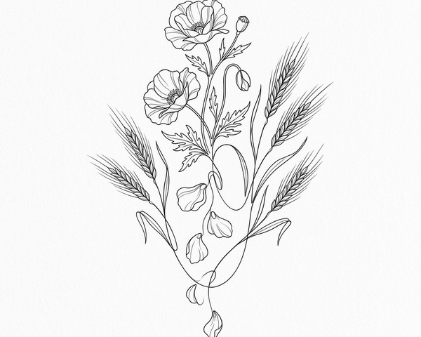
● СвободенВоздушный контур цветка без плотного закраса. Прекрасно смотрится на предплечье или вдоль позвоночника.
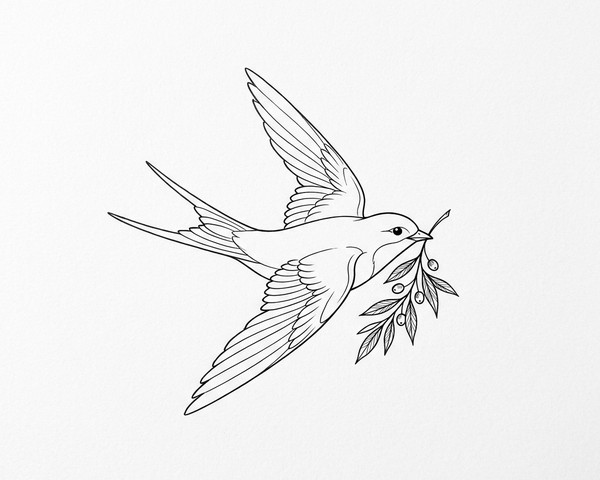
○ En archiveДинамичный лаконичный силуэт. Традиционный символ надежды и лёгкости в современном исполнении.
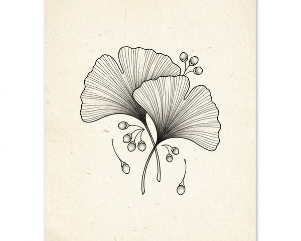
● СвободенИзящные веерные листья с радиальной микро-штриховкой. Символ стойкости и спокойствия, идеален для ключицы или рёбра.
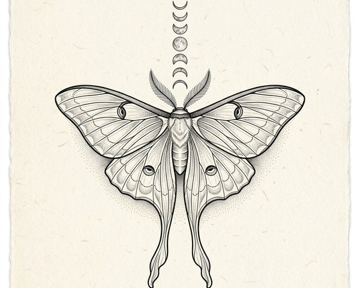
● СвободенАжурные полупрозрачные крылья с лунным циклом между усиками. Создан для симметричного расположения под ключицами или между лопаток.
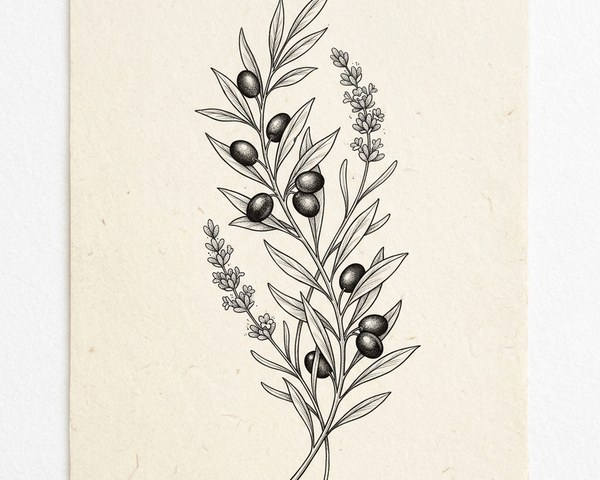
● СвободенИзогнутая ветвь с аккуратными оливковыми плодами и соцветиями дикой лаванды. Деликатная посадка вдоль ключицы.
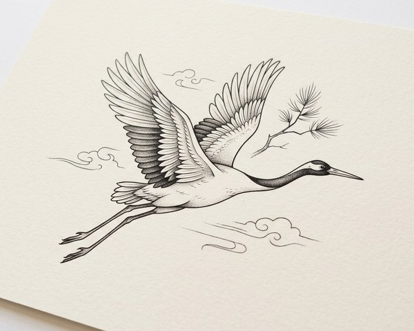
● СвободенГрациозный силуэт журавля в полёте с детальной проработкой перьев тонкой иглой 0.18 мм. Прекрасно повторяет изгиб рёбер или бедра.
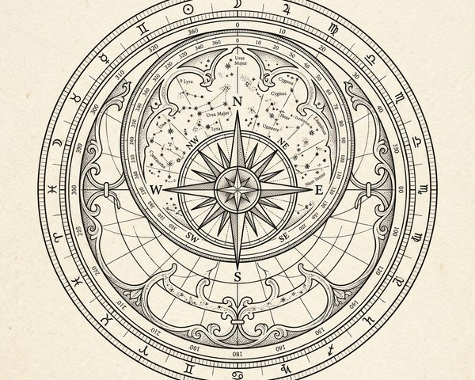
● СвободенСложное сплетение градуированных кругов, астрономических координат и полярной звезды. Академическая микро-гравюра.
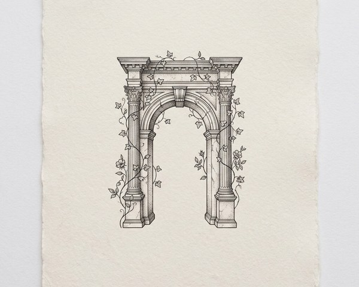
● СвободенКлассическая полуциркульная арка, увитая диким плющом и побегами шиповника. Тонкая архитектурная графика для предплечья.
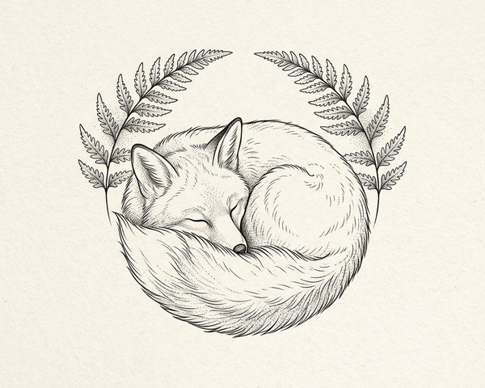
● СвободенУютный круговой эскиз со спящим лисёнком, укрытым резными листьями папоротника. Мягкая пудровая штриховка.
Каждый мастер ведёт авторскую линию исследований в ботанике, микро-гравюре и каллиграфии.
Специализируется на французском ботаническом гербарии, реликтовых травах и микро-линиях ультратонкой иглой 0.18 мм. Посадка эскиза вдоль ключицы и рёбер с учётом пластики дыхания.
Мастер академической микро-гравюры, астрономических карт и античных арок. Работает со строгими геометрическими пропорциями золотого сечения и тончайшей штриховкой.
Создаёт невесомые силуэты ночных мотыльков, парящих птиц и французскую каллиграфию пером. Особое внимание уделяет мягкому переходу тонких линий в прозрачную микро-тень.
Тонкие линии требуют бережного ухода в первые дни, чтобы пигмент лёг ровно и без пробелов.
Плёнка Suprasorb остаётся на коже всё это время. Не отклеивайте её раньше срока. Принимать душ можно, но избегайте распаривания.
Аккуратно снимите плёнку под тёплой водой. Промойте детским мылом без отдушек. Наносите крем с декспантенолом 3 раза в день тонким слоем.
Кожа полностью восстановится. Используйте обычный увлажняющий крем и обязательно защищайте татуировку кремом SPF 50+ на солнце.
Короткие ответы о подготовке, болевом пороге и сохранении тонких линий
Тонкие микро-линии наносятся стерильными одноразовыми модулями Kwadron с минимальной травматизацией эпидермиса. Ощущения напоминают лёгкое покалывание и переносятся значительно комфортнее, чем плотный закрас или классический контур. Даже на рёбрах и ключицах большинство гостей обходятся без анестезии.
Небольшое скопление сукровицы под плёнкой в первые 48 часов абсолютно естественно. Но если край плёнки отошёл более чем на 1 см или нарушилась герметичность, плёнку следует аккуратно снять под струёй тёплой воды, промыть кожу нейтральным детским мылом без отдушек и сразу перейти к уходу с кремом Д-Пантенол 3 раза в день.
За сутки до сеанса исключите алкоголь и энергетики (они разжижают кровь). Обязательно выспитесь и плотно поешьте за 1–2 часа до визита. Наденьте свободную хлопковую одежду, которая не будет натирать выбранную зону нанесения.
При соблюдении памятки по заживлению в 90% случаев коррекция не требуется: органический пигмент сохраняет чистый угольный оттенок. При необходимости бесплатный контрольный осмотр и микро-коррекция проводятся в течение 60 дней после полного восстановления кожи.